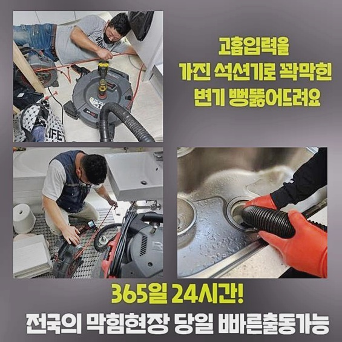
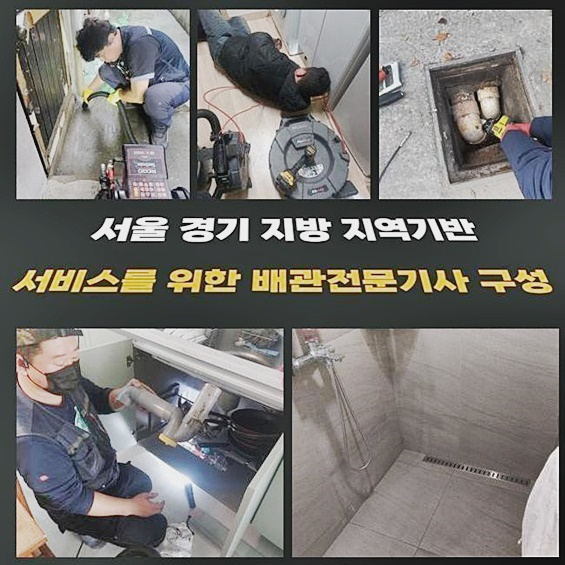
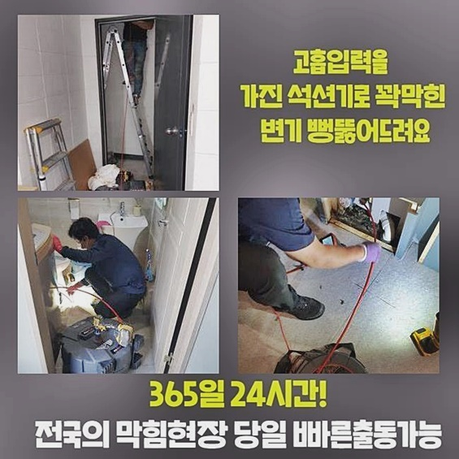
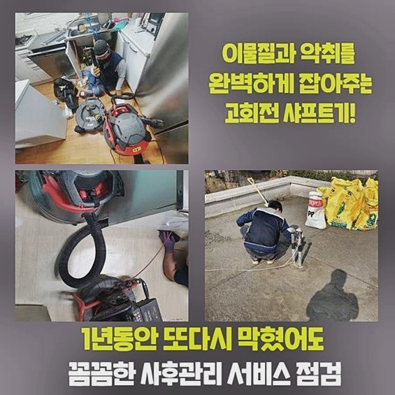
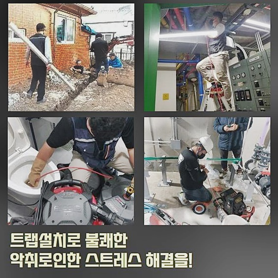
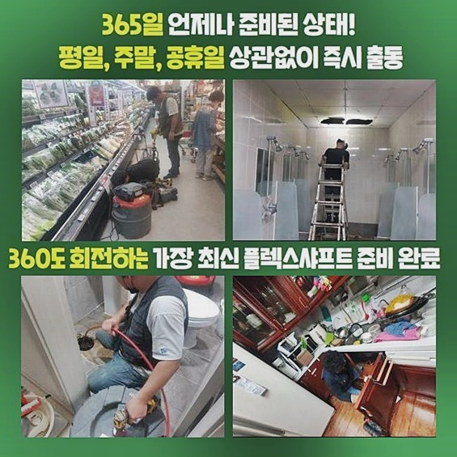
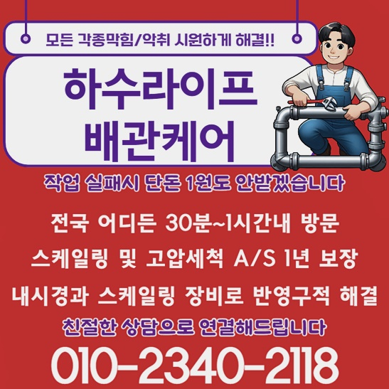

🏠 성남 율동싱크대배수구막힘 운중동 배수로뚫기 누수탐지
성남 싱크대막힘 전문 시공 후기

📋 작업 개요
- 위치: 성남
- 서비스 유형: 싱크대막힘, 하수구막힘, 배관막힘, 누수수리, 역류해결, 뚫는업체, 배관청소, 고압세척
- 작업 일시: 2024. 8. 22. 9:38
- 업체명: 하수구수사대 (010-5615-2118)
🔍 문제 상황
성남 율동싱크대배수구막힘 운중동 배수로뚫기 누수탐지
거주하는데에서 하수결함들이 야기돼도 난감한 상황에 빠지지만 계속해서 불특정다수가 이용하는 상업목적의 건물에 있어서 막히게되는 경우가 존재할 시 안전한 작업이 수반되어야해요
해당 현장의 문제들도 서둘러 방문드려 시정해냈습니다
상업시설은 보통 거주지나 일반 기업체 음식점과같이 다양한 사업체들이 자리를 잡고있기에 막히는 사태가 생기게 될 시 불편 뿐만 아니라 제한된 생활양식 영위로까지 우리에게 다가옵니다
이에 해당하는 피해들을 줄여드리기위해 조속하게 불편을 보이는 건축물로 달려갔습니다
도착하고보니 1층의 화장실안에서 역류되며 하수관을 세심히 파악해봤습니다
장소를 막론하고 어디일지라도 지속진행하는 막히게되는 증세는 명확한 원인의 파악이 요구되요
배수구 초입이 막힌거면 어렵지않게 해결되나 역류증세들도 불거진것이면 진단을 통한 문제의 시발점을 찾는 작업이 필요하죠
전문가를 부르고자 할땐 주의할건 어려운 작업까지 수행해주는 전문가에게 문의해주시는게 좋은데요
물이 솟구치는 증상까지 있다면 준비한 내시경기기를 삽입해 컨디션을 확인해서 문제들의 까닭을 사라지게하는 게 중요하겠습니다
문제가 발생되었을때 찾아뵈고나서 수행했던 과정들은 석션기기로 가볍게 막혀버린것인지 확인해봤습니다
심각한 불편을 보이면 석션만을 이용하여 시정하기 어려워서 밖으로 작업지 변경이 요구되는 상황들도 있을때도 있어요

🔎 원인 분석
💡 전문가 진단: 정밀 진단 장비를 사용하여 슬러지의 고착 여부를 판명하고 타격/세척 작업을 실시했습니다.
그렇다면 하수관끼리 배출되는 연결지점에 자리를 잡으며 하수관의 교체를 수행하는 경우들도 배제할 수 없어요
그러나 들여다보았더니 하나의 하수관만 통수오류가 생긴게 아니었죠
일부 배관의 증상으로만 치부하지 못하면 공동관이 비정상일 가능성들이 높을 수 있어요
다수가 이용하는 상가인 탓에 여러 사안들을 배제시키는것이 순탄치않았습니다
한 라인이 아닌 공동관의 결함일 시 곧장 고차원의 단계가 실시되어야했는데요
석션장비로 잔재를 빨아당겨 배관 간 연결된 부위의 문제 양상을 확인했습니다
안내한것처럼 이어진 위치에 잔해가 침전되면서 오류들이 생겼을수도 있어서입니다
그러하나 여전히 그대로이기에 내시경장치를 통해서 하수관을 체크했는데요
내시경장치는 이토록 물흐름에 심상치않은 모습이 목격되었을때 필수적 역할을 하는 장치인데요
이물이 잔존할 수 있는 하수관이면 거주지와 카페 등등 어디에서나 운용해요
의료적 내시경기계를 생각하면 조금더 이해되실거라 생각합니다
끝부분에 연결되어있는 렌즈부로 영상을 통해 군데군데 보면서 왜 이렇게 되었나 원인들을 찾을 수 있습니다
막히는게 발생되어 사전 준비없이 대강 문의하시면 도착하자마자 작업하면서 작업내용을 설명을 안하고 지출만 진행시키는 사례도 있는데요

🔧 작업 과정
이러하기에 일러드리는 사항을 읽으신 뒤 어느 상황에 무슨 기기를 운용할것인지 조금은 알고있는게 도움이 되실거에요
전문기기를 활용하거나 도착하자마자 굳이 안해도 되는 수리를 속행하는 전문가를 솎아낼 수 있어서죠
내시경장비의 머리를 가로막는 잔해가 곳곳에 심각했던걸 보았기에 샤프트도구를 운용하여 고민을 일으키는 지점에 청소들이 요구되었어요.필요하였는데요
배수로가 제 기능을 못하는 연유는 많은데 오늘처럼 전체배수관이 기능을 못하면 스스로의 힘으로는 해결하지 못합니다
바라만보고 자연적으로 해결되기를 바라기에 앞서 신속하게 목격하자마자 진단을 거쳐 잔재를 사라지게하는 전문적인 서비스를 거치시는 것이 역류등의 상황까지 예방가능해요
샤프트장비로 말씀드리면 케이블에 흡착물을 타격하는 체인들이 연결되어 있어요
체인들은 전원을 켰을때 원을 그리면서 부유물을 분쇄시키거나 오거로 교체해 집수시설로 빼내주는데요
하수구 뚫는 과정은 외부 하수구 설비나 공장같은 장소서 꾸준히 진행되는 절차입니다
이 단계는 내부에서 야기된 이물들과 쓰레기들을 제거시켜 효율성을 회복케하고 위생부분에 있어서도 이득이 되죠
이와같은 단계는 전문진들이 수행하고 도시환경 측에 속한 시설물이나 중앙집수 설비가 존재하는 하수배관은 주기적으로 관리하며 청소해주는 것이 중요합니다
안정적인 수리로 문제 발생을 최소로 낮추고 악취와 같은 고민을 피할 수 있는데요
저희들은 시공해줄땐 내시경장치를 사용하여 문제의 시발점 스팟을 다시 관찰하여 청결하게 체크해주는 수순으로 신속그러하나 명확히 작업해드립니다
여러분 중 배수가 안되는 사태가 나타났을때 어떤곳을 문의하는것이 베스트인지 고심하시면 좋을거에요!
1번 신속한 내방 두번째 자가적 관리법 안내 3번 알맞는 장비운용
먼저 위같은 사항만 확인하더라도 경제적 지출을 날리지않고 아무래도 빠른 세척이 이뤄집니다
작업 중간중간 하수라인 결함을 체크해가며 잔해를 사라지게만들었죠
끝으로 문제 상태를 마무리할 단계에 접어듭니다
해당 과정에서 확인하셔야 하는것은 정리를 어떤식으로 진행하느냐와 연관한 사항입니다
관로를 청결하게 세척한 뒤 연결부품까지 잘 챙겨주어야 하므로 이것도 꼼꼼하게 진행시켰어요
저희전문진은 작업 결과들을 확인해보면 느끼시겠지만 전문가스러운 수리를 경험할 수 있고 재발없는 작업해요


✅ 작업 완료
이와같은 자신감으로 동일한 증상이 발생되어 전화주시면 일년 간 AS정책을 보장해드려요
그렇지만 고객분의 실수들이 발생하지않도록 힘써 예방을 하시기를 바랍니다
하수관로로 유입될 수 있는 고착물이라던가 기름은 신경쓰셔서 피해서 되도록 청수만이 빠져나가게 거름망들을 유지하는것에 신경쓰시기를 바라요
저희들의 AS서비스 제공은 걱정하실 필요 없습니다
오늘도 제대로 작업을 수행하고 깨끗히 끝내준 현장이였는데요
작업을 할 때는 고객에게 이해하기 쉬운 내용전달로 현 상태를 상담하고있기에 조속한 배수를 바란다면 저희들에게 연락하시면 됩니다




⚠️ 베란다 누수 및 방수 관리 방법
- ✅ 비가 많이 올 때 창틀 주변이나 아래층 천장에 얼룩이 생기는지 정기적으로 확인해 보세요.
- ✅ 우수관 주변 실리콘 마감이 들뜨거나 깨진 틈새가 있는지 손상 여부를 수시로 체크하세요.
- ✅ 베란다 바닥 타일의 줄눈(메지)이 소실되면 그 틈으로 물이 침투하여 누수가 유발됩니다.
- ✅ 누수 의심 증상 발견 시 방치하면 아래층 손실이 커지므로 즉시 전문가의 진단을 받으십시오.
💡 핵심 정리
- 확실한 장비 작업(내시경 점검 및 샤프트 스케일링)으로 원인을 뿌리 뽑습니다.
- 작업 후 1년 이내에 동일한 부위 재발 시 100% 무상 A/S 서비스를 보장합니다.
- 서울 · 경기 · 인천 전 지역에 24시간 언제든 긴급 출동할 수 있도록 항시 대기 중입니다.
❓ 자주 묻는 질문 (FAQ)
🚨 성남 싱크대막힘 문제로 고민이신가요?
정확한 원인 진단과 확실한 시공으로 재발 없는 해결을 약속드립니다.
24시간 긴급 출동 | 서울 · 경기 · 인천 전지역 | 1년 내 재발 시 무상 A/S